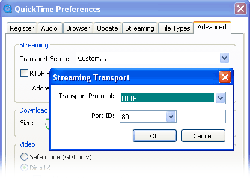

There are a number of different formats available for the streaming of live footage in a web browser:
QuickTime MPEG-4 *
This is a very efficient format that will give good performance when viewing over either a local network or the Internet. This method works on both Mac and Windows computers, and supports both video and audio. On Windows, this requires the installation of QuickTime.
Server-push JPEG
This is a widely-compatible format that works well on local networks and requires very little server resources. For streaming over the internet however, the MPEG-4 format will give better performance. This method is supported by all major web browsers on both Mac and Windows computers (except Internet Explorer), as well as iOS devices. This method does not support audio.
JavaScript JPEG
This works by using a scripting language called JavaScript to cause the browser to continuously download and display images. This is useful for certain mobile devices which do not support the methods above.
Still image JPEG
A still image will be displayed for each camera. To refresh the display with
new images, press the browser's reload button.
Auto
An appropriate method will be chosen automatically depending on the browser
that you are using.
* If you cannot view the MPEG-4 stream, it is most likely due to the QuickTime settings on your computer. Please do the following:
Mac
Open the Terminal application from your Utilities folder (which you can locate using the Finder's Go menu), and enter the following line of text, followed by the return key:
qtdefaults write TransportSettings HTTP 80
Windows
Go to the Control Panel and double-click on QuickTime to open the QuickTime settings. Click the Advanced tab, change the Transport Setup to Custom, and then select HTTP and Port 80 in the subsequent window:
